Heuristic review · error prevention
The odds jump under the thumb
Live prices refresh several times a minute and cells reflow when markets open or close. A tap meant for 1.85 can land on 1.67, or on the next market.
UX case study · Concept · 2026
Live betting apps move the odds under your thumb, show the win before the risk and hide the limits. APSIS fixes all three inside the bet flow.
Concept project — not a real product. No real-money gambling. Teams, players and odds are fictional; demo credits only.
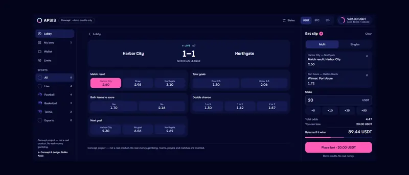
People who bet on live matches from a phone: one hand, short bursts, attention split with the game.
Odds refresh while the thumb is on its way, so the tap lands on a price nobody read. The slip shows the possible win in big type and the stake in small. Limits and breaks live four screens deep in settings, far from the money.
A bet in three taps that never lands at an unseen price, with the risk as loud as the win and the limits one tap from the balance.
Targets for a usability test, not results
No interviews or usability tests were run for this concept. What follows is a heuristic review against Nielsen's ten heuristics, of patterns that live-betting interfaces commonly use, plus one assumption of my own. Each insight says which it is.
Heuristic review · error prevention
Live prices refresh several times a minute and cells reflow when markets open or close. A tap meant for 1.85 can land on 1.67, or on the next market.
Heuristic review · match with the real world
Possible returns get the biggest type on the slip; the stake, the amount you can actually lose, is a grey label beside the input.
Heuristic review · user control
Deposit and time limits sit under Account, Settings, Responsible gambling, so the tools exist but are not where the decision is made.
Assumption
A futuristic look tends to put glow and gradients behind the numbers. I assume the odds have to win that fight on every screen, and kept the effects away from them.
Proto-personas: assumptions to test, not research findings
Proto-persona · assumption
When the game turns, I want to back what I just saw in seconds, so I don't miss the price.
NeedsStable targets, one-handed reach, a slip that never covers the score.
Proto-persona · assumption
When I plan Saturday, I want to stack picks and see the total odds and stake clearly, so I know what I'm risking.
NeedsReadable totals on a phone, easy removal, Singles beside Multi.
Proto-persona · assumption
When I set a budget, I want the app to hold me to it without lectures, so betting stays fun.
NeedsThe limit visible near the money, plain words, a break that is easy to take.
From odds to a placed bet is three taps: odds, stake, place. Everything that can go wrong is checked before the last tap counts, and every exception has one way out that never places a bet by itself.
Five places, no deeper than two levels. The bet slip is not a page but a layer every screen can open, and Limits hangs off the balance, not off Settings.
01Lobby
The first screen is the live list. Every match has the same three cells in the same place, so the eye and the thumb learn one target.
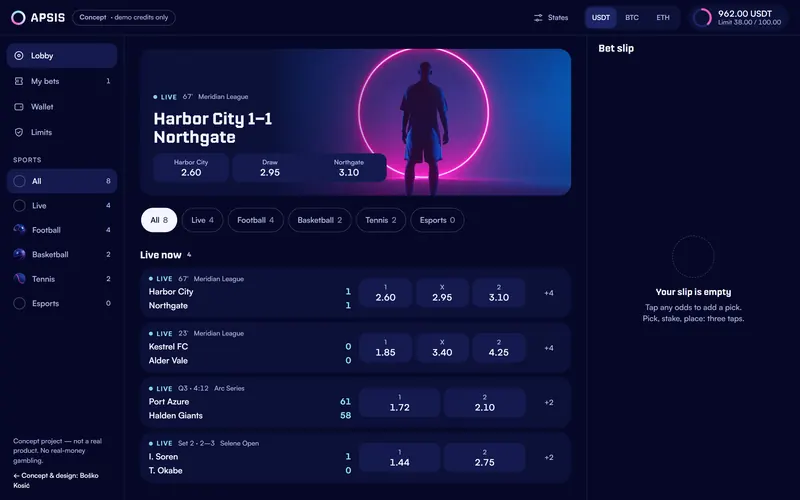
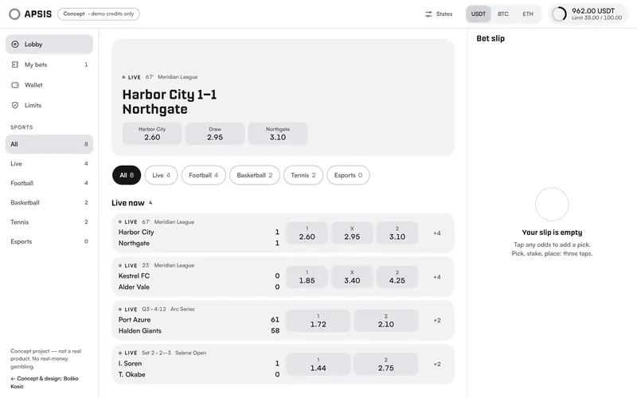
Desktop · drag to compare
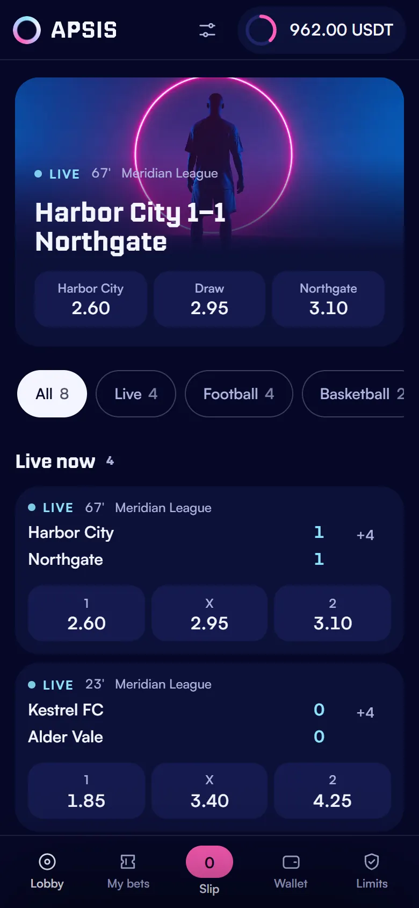
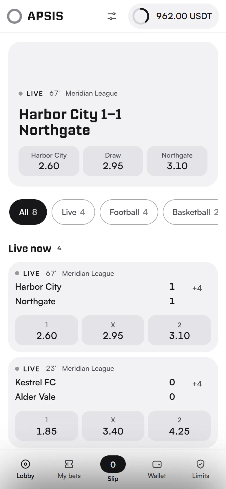
Phone
02Match + bet slip
The slip opens beside the scoreboard on desktop and as a sheet on a phone, so the game never disappears behind it.
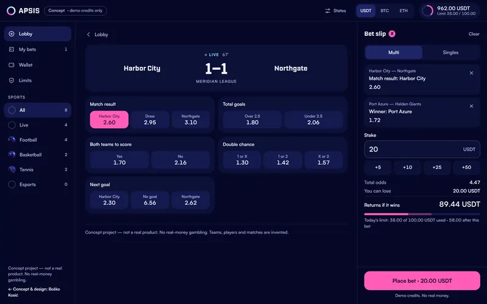
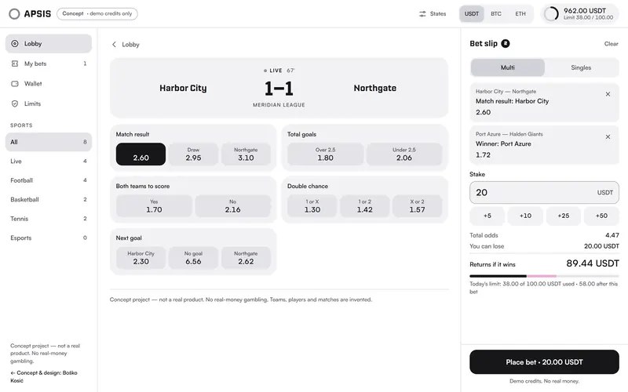
Desktop · drag to compare
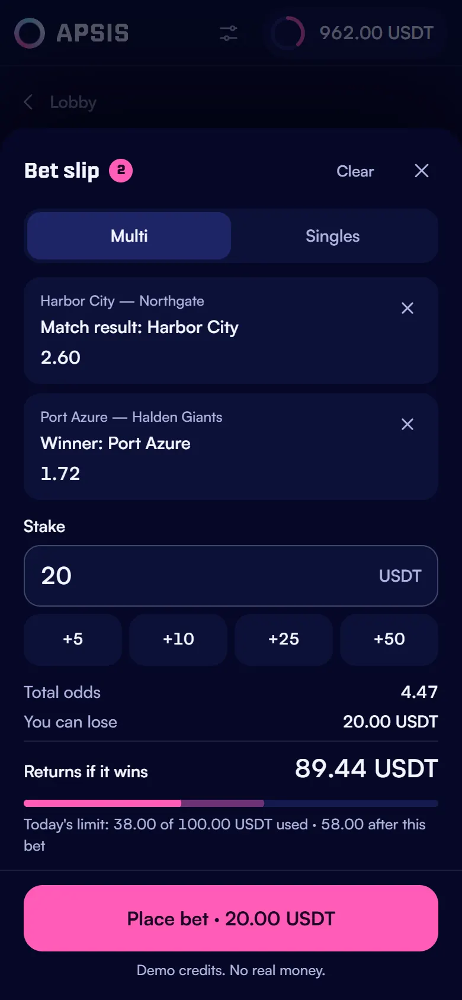
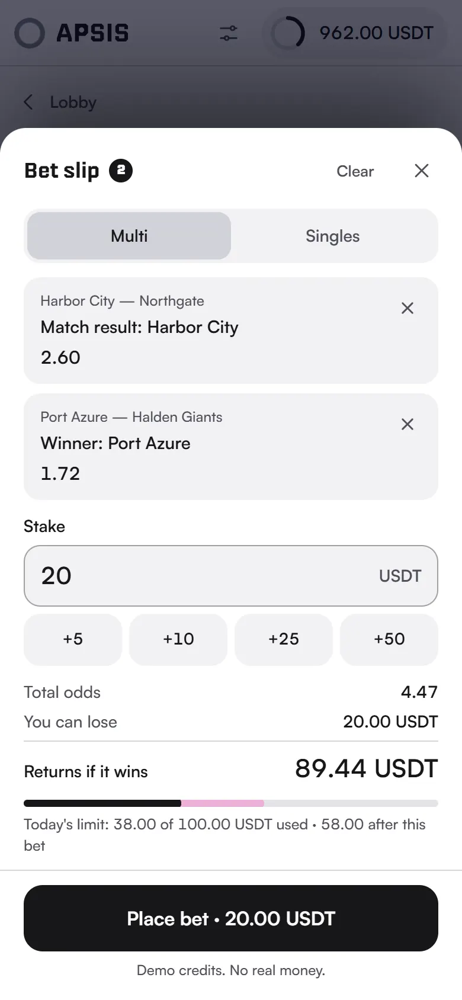
Phone
03Limits
Limits open with one tap on the balance from anywhere, and read as today's ring, not as a settings form.
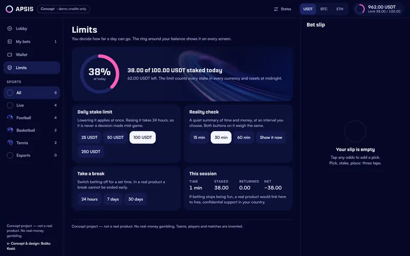
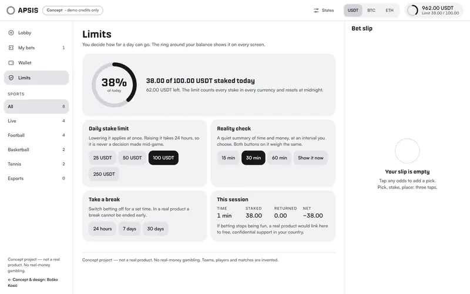
Desktop · drag to compare
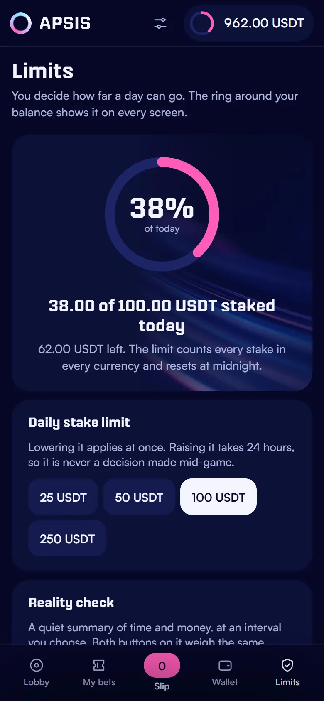
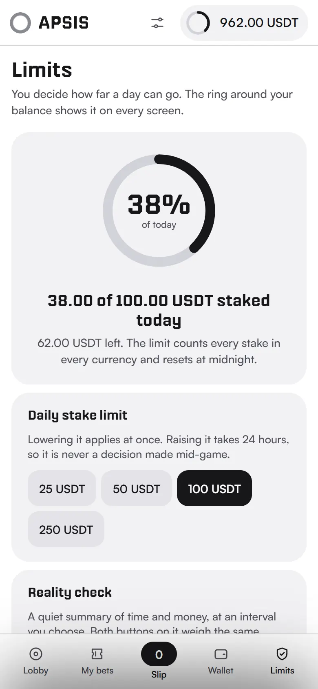
Phone
Every colour, face and radius is named once, as a token. The odds button is the main component, and its states carry the whole live behaviour.
#060827background#141A4Ecards, odds#F4F5FFnumbers, labels#AEB3DEsecondary text#FF5CB8selected, primary action#8FE3FFlive state#6DF2B0odds went up#FFD166odds went downOdds that stay put
Nippo titles · Satoshi interface and numbers
1.85 2.10 1.67 11.11 38.00 / 100.00
Tabular figures: odds line up and never shift when they change
Default
Selected
Went up
Went down
Suspended
52 px tall, the whole cell is the target. A price change is colour plus an arrow, never movement. With reduced motion the flash is off and the arrows stay.
Responsible play is not a page here, it is the exceptions of the bet flow. Each one stops the bet, says what happened in plain words and offers one way out.
Five people who bet on sport at least monthly, 20 minutes each, remote, thinking aloud, on the live prototype with demo credits.
| # | Task | Pass when |
|---|---|---|
| 01 | Place a single on a live match | ≤ 3 taps and under 10 s, for 4 of 5 |
| 02 | Odds change while the slip is open | 0 bets placed at odds not seen |
| 03 | Set a daily limit of 50 from the lobby | 1 tap to Limits, for 4 of 5 |
| 04 | After placing, say what you could lose | 4 of 5 name the stake |
| 05 | Read the total odds of a multi on a phone | 0 misreads |
A plan, not results: no test has been run yet
A working prototype of the whole flow: lobby, match, slip in single and multi, my bets, wallet with demo credits and Limits, with loading, empty, error, changed-odds, suspended and limit states, on desktop, tablet and phone, keyboard and reduced motion included.
Concept project — not a real product. No real-money gambling. Teams, players and odds are fictional; demo credits only.
Run five short interviews before drawing a single screen, so the personas start as findings instead of assumptions.
Test the reality-check timing with real session lengths: an interval that interrupts too often gets dismissed without being read.
Open to full-time roles, remote contracts and freelance projects worldwide.
Quick brief3 taps · 20 seconds
Hi Boško,
1I need
2Timing
Then I reply within a day, with questions and first ideas.